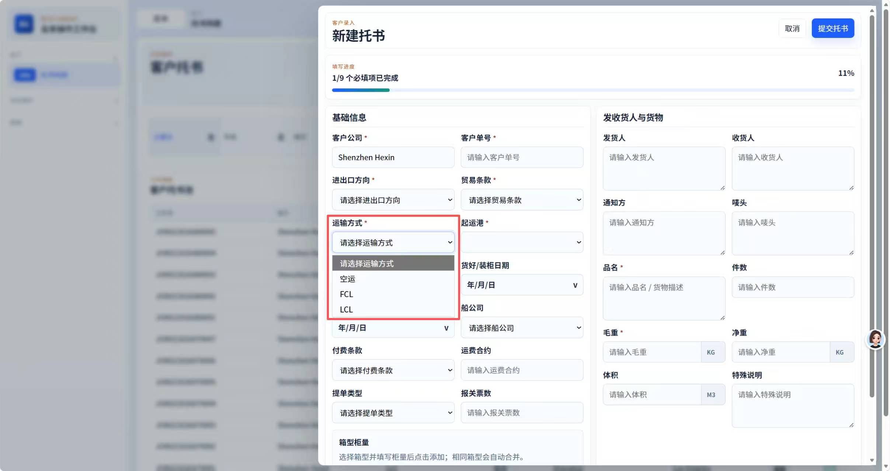
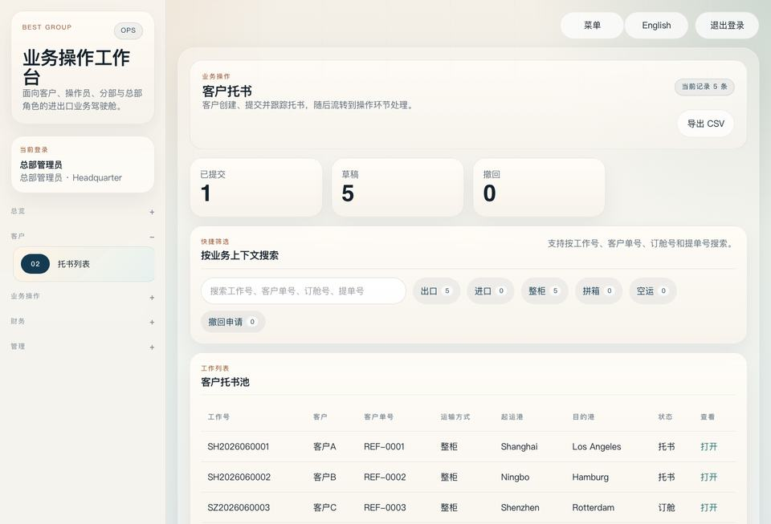
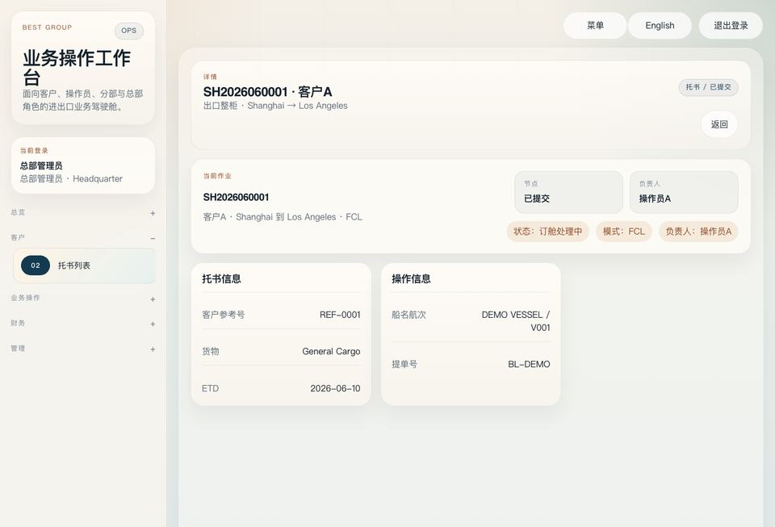

从毕业设计到持续接单 · 配套材料
物流项目作品包
与下一次沟通的行动表
把一条流程展示清楚，再把范围和验收写下来。
历史项目截图用于页面导览；以下任务书、费用与话术均为教学示例，不代表实际报价、成交或客户确认记录。
01 · 用三张页面说明一条流程
面向：需要录入订单、分工跟进和查询状态的小团队。演示时沿着“客户录入 → 团队查找 → 查看详情”讲解。

第一步 · 从表单开始
说明谁来填写、哪些信息必填，以及填写后交给谁。
第二步 · 在列表找订单
说明团队如何找到订单、区分状态，并继续处理。
第三步 · 查看订单详情
说明订单内容与处理结果在哪里看，以及由谁查看。点击图片查看原图。三图是历史页面材料，并非同一张订单的连续操作录像，也不证明当前系统已通过以下教学验收。
配合实际演示的讲解顺序
- 先说业务问题：同一张订单的信息如何在客户和团队之间传递。
- 使用测试账号录入一张订单，保存编号，再切换操作员更新状态。
- 回到客户账号刷新查询，最后用另一客户账号检查数据隔离。
- 演示前确认当前环境和账号可用；如只有截图，就按页面导览展示并说明范围。
02 · 填写版任务书：先跑通订单
本阶段目标：客户 A 提交订单，操作员找到并更新状态，客户 A 能查到最新结果。
| 要确认什么 | 本例怎样填写 |
|---|---|
| 角色 | 客户：提交和查看自己的订单。操作员：按授权范围跟进订单。管理员：维护账号；具体可见范围在开工前确认。 |
| 输入 | 教学字段：运输方式、起运地、目的地、货物说明。必填项留空时提示具体字段，不创建订单。 |
| 交付内容 | 订单表单、订单列表、订单详情、状态更新，以及各角色的数据访问限制。 |
| 本阶段边界 | 人工更新状态；自动抓取轨迹、支付和外部系统对接不计入本阶段，新增时重新确认范围、费用和时间。 |
| 交付材料 | 可访问的测试版本、测试账号与角色说明、验收步骤和问题记录。实际部署入口在确认消息中填写。 |
可执行的验收步骤
- 客户 A 留空目的地，点击提交：提示必填，不产生新订单。
- 补全字段并提交：生成订单编号，列表与详情显示一致。
- 操作员找到该编号，改为“处理中”；客户 A 刷新后看到相同状态。
- 客户 B 的列表不出现 A 的订单；使用该订单的详情入口也无法读取。后端检查访问权限。
- 刷新、退出后重新登录，订单内容和状态仍保存。对照以上项目记录通过或差异。
这里的字段、状态和验收步骤是教学设定。实际项目需与使用者逐项确认后再实现。
03 · 教学报价拆分：¥12,000 对应什么
价格示例用于说明交付范围和责任如何拆分；实际费用还取决于业务复杂度、工期、环境、维护约定等。
| 阶段 | 交付与验收 | 示例费用 |
|---|---|---|
| 订单与基础权限 | 实现任务书中的录单、列表、详情和状态更新；客户隔离从此阶段检查。按上述五步验收。 | ¥6,000 |
| 费用与账单 | 费用申请、财务处理和账单查询；一笔申请完成后，授权角色查到一致的金额与状态。 | ¥4,000 |
| 管理与交接 | 账号管理、配置说明、约定环境部署、使用说明和最终流程复核；交接人用新账号按说明完成操作。 | ¥2,000 |
| 合计 | 各阶段均交付可核对的结果；基础权限贯穿实现与验收。 | ¥12,000 |
报价时还要明确的条件
- 本例假设一个网页系统、一个约定部署环境，以及已经确认的角色和流程。
- 域名、服务器及第三方服务费用另外列明；自动轨迹、支付等外部对接另行确认。
- 既定验收不通过的缺陷与新增需求分开记录；新增需求先确认影响再实施。
- 工期、付款节点、维护周期和响应方式留给真实项目单独商定，本例不虚构这些承诺。
04 · 阶段确认消息
本次首阶段版本已准备好，入口：【填写链接】；客户 A、客户 B、操作员账号：【通过约定方式提供】。
请按三项核对：
① A 新建订单 → 操作员更新为“处理中” → A 刷新后查到。
② B 在列表和详情入口都无法读取 A 的订单。
③ 本阶段为录单、跟进和查询，自动轨迹接口另行确认。
请逐项回复“通过”，或说明卡在哪一步并附页面截图。我会记录差异，修复后重新核对。
未回复的项目保持“待确认”。保存版本、入口、核对日期、对方原始回复和重测结果，避免把“看过了”当作全部通过。
05 · 第一条消息与后续问题
适合发给已有联系、确实有相关业务的负责人。根据你与对方的关系调整措辞。
我整理了一个订单管理作品，从录单到查状态都能看见。想到你们平时也要跟单，想请你看看：现在最费时间的是哪一步？如果相关，我可以按你们的流程演示。
作品入口：【填写链接】
对方愿意聊，再问
- 现在这一步由谁做？
- 一次要花多久，哪里容易出错？
- 如果只先改一处，做到什么算有用？
记下对方原话，再整理为目标、范围、边界与验收。对方没有需求时结束这一轮，不把无回复当作认可。
06 · 空白行动表
可复制到自己的文档填写，或使用浏览器打印。本页面不会发送任何消息。
我选择的作品与入口：
我想联系的人，以及作品为什么与对方有关：
本次只演示的一条流程：
我的第一条消息：
对方的原话与现在最费时间的一步：
下一步约定、负责人和时间：
沟通后填写任务书
目标：
范围（页面、角色、流程）：
边界（本次另行确认的事项）：
验收（谁用什么输入，得到什么结果）：